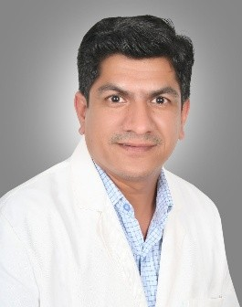

Histopathology systems
Modern tissue-processing and advanced staining techniques.
The science of histopathology and molecular diagnostics, applied to the decisions clinicians make every day.
Our Histopathology & Molecular Biology Laboratory has been established with a simple objective: to provide dependable diagnostic information that helps clinicians make better decisions.
The laboratory brings together two complementary areas of modern diagnostic medicine. Histopathology allows us to understand disease through the examination of tissues and cells. Molecular diagnostics allows us to look deeper — at DNA, RNA, microorganisms and molecular alterations that may not be visible through conventional microscopy alone. Together, these disciplines provide a more comprehensive approach to diagnosis.
A modern, technology-enabled laboratory with a roadmap toward digital pathology and advanced molecular testing.
Our laboratory processes are designed around a clear set of guiding principles:
We recognise that laboratory quality begins long before a specimen reaches the microscope or analyser. Proper specimen collection, identification, transportation, processing, testing, interpretation and reporting are all essential components of a reliable diagnostic service.
A laboratory report should not merely present numbers or microscopic findings. It should provide information that is meaningful in the clinical context. Our approach therefore emphasises:
Our laboratory is being developed with an emphasis on appropriate technology that improves accuracy, efficiency, traceability and diagnostic capability.
Modern tissue-processing and advanced staining techniques.
Molecular amplification and PCR-based diagnostic technologies.
Laboratory information systems and data-driven quality monitoring.
A roadmap toward digital pathology capabilities.
Technology is an enabler — it should support, not replace, professional expertise:
experienced professionals + reliable processes + appropriate technology + quality culture.
Nearly three decades in diagnostic medicine, healthcare leadership and medical education — across corporate labs, hospital networks and diagnostic startups.

Over 22 years across leading pathology and diagnostic laboratories in India — pairing scientific depth with quality leadership.
Tell us what you need — our team will help with sample requirements, turnaround, and reporting.